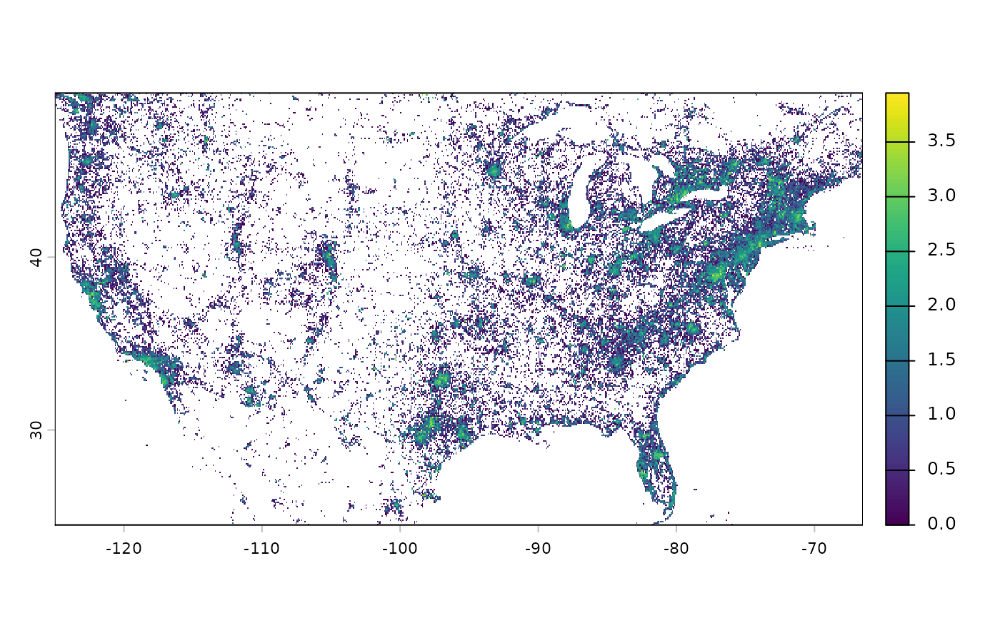
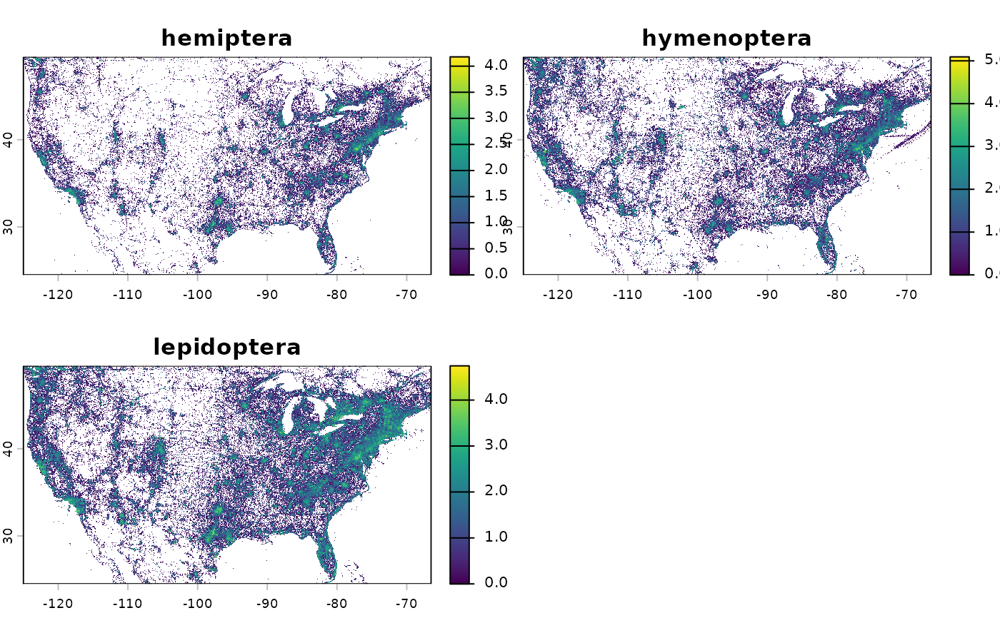

Downloads sampling effort raster files from the Open Science Framework (OSF)
based on specified taxonomic groups, descendants, metrics, years, and spatial
resolution. The function validates all inputs and retrieves corresponding
raster data files. Valid descendants for each group can be retrieved with
get_group_descendants(). For more information, see this repo and El-Gabbas
(2026). DOI.
Usage
get_group_descendants(group = NULL)
get_sampling_effort(
group = NULL,
descendants = "all",
metric = NULL,
years = "total",
resolution = NULL,
out_dir = getwd(),
conflicts = "skip",
verbose = FALSE
)Arguments
- group
Character. The taxonomic group to download sampling effort data for. Must be one of: "all", "amphibia", "arachnida", "aves", "fungi", "insecta", "mammalia", "mollusca", "reptilia", or "tracheophyta". "all" refers to the overall sampling effort across all groups. Required.
- descendants
A character vector of descendants for the chosen group. Valid descendants vary by group. Defaults to "all" to download data for all descendants combined for the chosen group. Use
get_group_descendants()to retrieve valid descendants for a given group. Required.- metric
A character string specifying the metric to download. Must be either "n_sp" (number of species) or "n_obs" (number of observations). Required.
- years
A numeric vector or character string specifying year(s) to download. Valid range is 1980 to 2025, or "total" (default) for overall efforts. Automatically set to "total" when group is "all". Required for other groups.
- resolution
A numeric value specifying the spatial resolution in kilometers. Must be one of: 1, 5, 10, or 20 km. Required.
- out_dir
A character string specifying the output directory path. Defaults to the current working directory. If the directory does not exist, it will be created.
- conflicts
A character string specifying how to handle existing files. Must be either "skip" (default) or "overwrite".
- verbose
Logical. If
TRUE, prints progress messages during the download process. Defaults toFALSE.
Value
A tibble containing downloaded sampling effort data with columns:
group: The taxonomic groupdescendant: The taxonomic descendantyear: The year of the datametric: The metric type (n_sporn_obs)resolution: The spatial resolution in kmname: The name of the downloaded fileid: The OSF file IDlocal_path: The local file path where the raster was downloadedmeta: Metadata about the downloaded file from OSF
Details
This function downloads sampling effort raster files from the OSF project. This function complements the manuscript "A Global, Taxon-Stratified, High-Resolution Sampling-Effort Dataset From GBIF for Bias-Aware Ecological Modelling" [DOI] by providing a programmatic way to access the underlying data used in the study. Please cite the manuscript when using the data retrieved by this function.
Files on the OSF project are organized hierarchically by group, resolution, metric, and descendant-year combinations.
This function retrieves sampling effort rasters based on the specified group
and its descendants. The descendants argument allows users to specify which
descendant groups to download data for. The function validates descendants
using get_group_descendants() and retrieves the corresponding raster files
from OSF.
Use [get_group_descendants()] to retrieve all valid descendants for a given
taxonomic group.
References
El-Gabbas, A. (2026). A Global, Taxon-Stratified, High-Resolution Sampling-Effort Dataset From GBIF for Bias-Aware Ecological Modelling. Diversity and Distributions. DOI.
Examples
require(terra)
require(fs)
# Retrieve descendants for all groups
descendants_all <- get_group_descendants("all")
str(descendants_all)
#> List of 10
#> $ all : chr "all"
#> $ amphibia : chr [1:4] "all" "anura" "caudata" "gymnophiona"
#> $ arachnida : chr [1:17] "all" "amblypygi" "araneae" "holothyrida" ...
#> $ aves : chr [1:43] "all" "accipitriformes" "anseriformes" "apodiformes" ...
#> $ fungi : chr [1:12] "all" "ascomycota" "basidiomycota" "blastocladiomycota" ...
#> $ insecta : chr [1:32] "all" "archaeognatha" "blattodea" "cnemidolestodea" ...
#> $ mammalia : chr [1:30] "all" "afrosoricida" "artiodactyla" "carnivora" ...
#> $ mollusca : chr [1:11] "all" "bivalvia" "caudofoveata" "cephalopoda" ...
#> $ reptilia : chr [1:5] "all" "crocodylia" "sphenodontia" "squamata" ...
#> $ tracheophyta: chr [1:9] "all" "cycadopsida" "ginkgoopsida" "gnetopsida" ...
descendants_all$aves
#> [1] "all" "accipitriformes" "anseriformes"
#> [4] "apodiformes" "apterygiformes" "bucerotiformes"
#> [7] "caprimulgiformes" "cariamiformes" "casuariiformes"
#> [10] "charadriiformes" "ciconiiformes" "coliiformes"
#> [13] "columbiformes" "coraciiformes" "cuculiformes"
#> [16] "eurypygiformes" "falconiformes" "galliformes"
#> [19] "gaviiformes" "gruiformes" "leptosomiformes"
#> [22] "mesitornithiformes" "musophagiformes" "nyctibiiformes"
#> [25] "opisthocomiformes" "otidiformes" "passeriformes"
#> [28] "pelecaniformes" "phaethontiformes" "phoenicopteriformes"
#> [31] "piciformes" "podicipediformes" "procellariiformes"
#> [34] "psittaciformes" "pteroclidiformes" "rheiformes"
#> [37] "sphenisciformes" "steatornithiformes" "strigiformes"
#> [40] "struthioniformes" "suliformes" "tinamiformes"
#> [43] "trogoniformes"
# Retrieve valid descendants for a group
get_group_descendants("insecta")
#> [1] "all" "archaeognatha" "blattodea"
#> [4] "cnemidolestodea" "coleoptera" "dermaptera"
#> [7] "diptera" "embioptera" "ephemeroptera"
#> [10] "grylloblattodea" "hemiptera" "hymenoptera"
#> [13] "lepidoptera" "mantodea" "mantophasmatodea"
#> [16] "mecoptera" "megaloptera" "neuroptera"
#> [19] "odonata" "orthoptera" "palaeodictyoptera"
#> [22] "phasmida" "plecoptera" "protorthoptera"
#> [25] "psocodea" "raphidioptera" "siphonaptera"
#> [28] "strepsiptera" "thysanoptera" "trichoptera"
#> [31] "zoraptera" "zygentoma"
# |||||||||||||||||||||||||||||||||||||||||||||||||||||||||||
temp_dir <- fs::path(fs::path_temp(), "sampling_efforts")
fs::dir_create(temp_dir)
# Occurrence count for birds at 20 km resolution
efforts_birds_all <- get_sampling_effort(
group = "aves", metric = "n_obs", resolution = 20, out_dir = temp_dir)
dplyr::glimpse(efforts_birds_all)
#> Rows: 1
#> Columns: 9
#> $ group <chr> "aves"
#> $ descendant <chr> "all"
#> $ year <chr> "total"
#> $ metric <chr> "n_obs"
#> $ resolution <dbl> 20
#> $ name <chr> "n_obs_Aves_res_20.tif"
#> $ id <chr> "69144be425b8c888ea3ee2b8"
#> $ local_path <chr> "/tmp/RtmpOCEThP/sampling_efforts/n_obs_Aves_res_20.tif"
#> $ meta <list> [[<NULL>, <NULL>, "n_obs_Aves_res_20.tif", "file", "/69144be425b8c888ea3ee2b8", 822667, "osfstorage", "/res_20_n_obs/n_obs_Aves_res_20.tif", <NULL>, 2025-11-12 08:57:09, 2025-11-12 08:57:09, [["ba82a8bd3ef8fe226f5a91e366ff2755", "def3eac67285494859167be1838dd3fee1edc0a069f4465ed97a8a2f8262a226"], 55], [], FALSE, 1, FALSE], ["https://api.osf.io/v2/files/69144be425b8c888ea3ee2b8…
efforts_birds_all_r <- terra::rast(efforts_birds_all$local_path)
# Plot at log10 scale
terra::classify(efforts_birds_all_r, cbind(0, NA)) %>%
terra::crop(terra::ext(-125, -66.5, 24.5, 49.5)) %>%
log10() %>%
plot()

# |||||||||||||||||||||||||||||||||||||||||||||||||||||||||||
# Occurrence count for insecta at 10 km resolution in 2020
efforts_insecta_2020 <- get_sampling_effort(
group = "insecta", descendants = "all",
metric = "n_obs", years = 2020, resolution = 10, out_dir = temp_dir)
efforts_insecta_2020_r <- terra::rast(efforts_insecta_2020$local_path)
# Plot at log10 scale
terra::classify(efforts_insecta_2020_r, cbind(0, NA)) %>%
terra::crop(terra::ext(-125, -66.5, 24.5, 49.5)) %>%
log10() %>%
plot()
 # |||||||||||||||||||||||||||||||||||||||||||||||||||||||||||
# Species count for vascular plants at 10 km
efforts_plants_2020 <- get_sampling_effort(
group = "tracheophyta", descendants = "all",
metric = "n_sp", resolution = 10, out_dir = temp_dir)
efforts_plants_2020_r <- terra::rast(efforts_plants_2020$local_path)
# Plot at log10 scale
terra::classify(efforts_plants_2020_r, cbind(0, NA)) %>%
terra::crop(terra::ext(-125, -66.5, 24.5, 49.5)) %>%
log10() %>%
plot()
# |||||||||||||||||||||||||||||||||||||||||||||||||||||||||||
# Species count for vascular plants at 10 km
efforts_plants_2020 <- get_sampling_effort(
group = "tracheophyta", descendants = "all",
metric = "n_sp", resolution = 10, out_dir = temp_dir)
efforts_plants_2020_r <- terra::rast(efforts_plants_2020$local_path)
# Plot at log10 scale
terra::classify(efforts_plants_2020_r, cbind(0, NA)) %>%
terra::crop(terra::ext(-125, -66.5, 24.5, 49.5)) %>%
log10() %>%
plot()
 # |||||||||||||||||||||||||||||||||||||||||||||||||||||||||||
# Occurrence count for selected insect groups (descendants) at 10 km
efforts_insects <- get_sampling_effort(
group = "insecta",
descendants = c("hemiptera", "hymenoptera", "lepidoptera"),
metric = "n_obs", resolution = 10, out_dir = temp_dir)
efforts_insects
#> # A tibble: 3 × 9
#> group descendant year metric resolution name
#> <chr> <chr> <chr> <chr> <dbl> <chr>
#> 1 insecta hemiptera total n_obs 10 n_obs_Hemiptera_total_res_10.tif
#> 2 insecta hymenoptera total n_obs 10 n_obs_Hymenoptera_total_res_10.tif
#> 3 insecta lepidoptera total n_obs 10 n_obs_Lepidoptera_total_res_10.tif
#> id
#> <chr>
#> 1 691627285d3006de940c2892
#> 2 6916281e843c090b4dfdc3f1
#> 3 69162b43bdc702dce1e2fd62
#> local_path
#> <chr>
#> 1 /tmp/RtmpOCEThP/sampling_efforts/n_obs_Hemiptera_total_res_10.tif
#> 2 /tmp/RtmpOCEThP/sampling_efforts/n_obs_Hymenoptera_total_res_10.tif
#> 3 /tmp/RtmpOCEThP/sampling_efforts/n_obs_Lepidoptera_total_res_10.tif
#> meta
#> <list>
#> 1 <named list [3]>
#> 2 <named list [3]>
#> 3 <named list [3]>
dplyr::glimpse(efforts_insects)
#> Rows: 3
#> Columns: 9
#> $ group <chr> "insecta", "insecta", "insecta"
#> $ descendant <chr> "hemiptera", "hymenoptera", "lepidoptera"
#> $ year <chr> "total", "total", "total"
#> $ metric <chr> "n_obs", "n_obs", "n_obs"
#> $ resolution <dbl> 10, 10, 10
#> $ name <chr> "n_obs_Hemiptera_total_res_10.tif", "n_obs_Hymenoptera_total_res_10.tif", "n_obs_Lepidoptera_total_res_10.tif"
#> $ id <chr> "691627285d3006de940c2892", "6916281e843c090b4dfdc3f1", "69162b43bdc702dce1e2fd62"
#> $ local_path <chr> "/tmp/RtmpOCEThP/sampling_efforts/n_obs_Hemiptera_total_res_10.tif", "/tmp/RtmpOCEThP/sampling_efforts/n_obs_Hymenoptera_total_res_10.tif", "/tmp/RtmpOCEThP/sampling_efforts/n_obs_Lepidoptera_total_res_10.tif"
#> $ meta <list> [[<NULL>, <NULL>, "n_obs_Hemiptera_total_res_10.tif", "file", "/691627285d3006de940c2892", 291337, "osfstorage", "/res_10_n_obs/n_obs_Hemiptera_total_res_10.tif", <NULL>, 2025-11-13 18:44:56, 2025-11-13 18:44:56, [["8bfce8c7dc631d23e2b9f64645612606", "ea6bde11aca3b7135487e3f1b3fc0708e4923f65c8bb116ce7d3848f886f53d5"], 35], [], FALSE, 1, FALSE], ["https://api.osf.io/v2/files/69…
efforts_insects_r <- terra::rast(efforts_insects$local_path)
efforts_insects_r
#> class : SpatRaster
#> size : 2160, 4320, 3 (nrow, ncol, nlyr)
#> resolution : 0.08333333, 0.08333333 (x, y)
#> extent : -180, 180, -90, 90 (xmin, xmax, ymin, ymax)
#> coord. ref. : lon/lat WGS 84 (EPSG:4326)
#> sources : n_obs_Hemiptera_total_res_10.tif
#> n_obs_Hymenoptera_total_res_10.tif
#> n_obs_Lepidoptera_total_res_10.tif
#> names : n_obs_Hemi~tal_res_10, n_obs_Hyme~tal_res_10, n_obs_Lepi~tal_res_10
#> min values : 0, 0, 0
#> max values : 92257, 270776, 324427
# Plot at log10 scale
terra::classify(efforts_insects_r, cbind(0, NA)) %>%
terra::crop(terra::ext(-125, -66.5, 24.5, 49.5)) %>%
stats::setNames(c("hemiptera", "hymenoptera", "lepidoptera")) %>%
log10() %>%
plot()
# |||||||||||||||||||||||||||||||||||||||||||||||||||||||||||
# Occurrence count for selected insect groups (descendants) at 10 km
efforts_insects <- get_sampling_effort(
group = "insecta",
descendants = c("hemiptera", "hymenoptera", "lepidoptera"),
metric = "n_obs", resolution = 10, out_dir = temp_dir)
efforts_insects
#> # A tibble: 3 × 9
#> group descendant year metric resolution name
#> <chr> <chr> <chr> <chr> <dbl> <chr>
#> 1 insecta hemiptera total n_obs 10 n_obs_Hemiptera_total_res_10.tif
#> 2 insecta hymenoptera total n_obs 10 n_obs_Hymenoptera_total_res_10.tif
#> 3 insecta lepidoptera total n_obs 10 n_obs_Lepidoptera_total_res_10.tif
#> id
#> <chr>
#> 1 691627285d3006de940c2892
#> 2 6916281e843c090b4dfdc3f1
#> 3 69162b43bdc702dce1e2fd62
#> local_path
#> <chr>
#> 1 /tmp/RtmpOCEThP/sampling_efforts/n_obs_Hemiptera_total_res_10.tif
#> 2 /tmp/RtmpOCEThP/sampling_efforts/n_obs_Hymenoptera_total_res_10.tif
#> 3 /tmp/RtmpOCEThP/sampling_efforts/n_obs_Lepidoptera_total_res_10.tif
#> meta
#> <list>
#> 1 <named list [3]>
#> 2 <named list [3]>
#> 3 <named list [3]>
dplyr::glimpse(efforts_insects)
#> Rows: 3
#> Columns: 9
#> $ group <chr> "insecta", "insecta", "insecta"
#> $ descendant <chr> "hemiptera", "hymenoptera", "lepidoptera"
#> $ year <chr> "total", "total", "total"
#> $ metric <chr> "n_obs", "n_obs", "n_obs"
#> $ resolution <dbl> 10, 10, 10
#> $ name <chr> "n_obs_Hemiptera_total_res_10.tif", "n_obs_Hymenoptera_total_res_10.tif", "n_obs_Lepidoptera_total_res_10.tif"
#> $ id <chr> "691627285d3006de940c2892", "6916281e843c090b4dfdc3f1", "69162b43bdc702dce1e2fd62"
#> $ local_path <chr> "/tmp/RtmpOCEThP/sampling_efforts/n_obs_Hemiptera_total_res_10.tif", "/tmp/RtmpOCEThP/sampling_efforts/n_obs_Hymenoptera_total_res_10.tif", "/tmp/RtmpOCEThP/sampling_efforts/n_obs_Lepidoptera_total_res_10.tif"
#> $ meta <list> [[<NULL>, <NULL>, "n_obs_Hemiptera_total_res_10.tif", "file", "/691627285d3006de940c2892", 291337, "osfstorage", "/res_10_n_obs/n_obs_Hemiptera_total_res_10.tif", <NULL>, 2025-11-13 18:44:56, 2025-11-13 18:44:56, [["8bfce8c7dc631d23e2b9f64645612606", "ea6bde11aca3b7135487e3f1b3fc0708e4923f65c8bb116ce7d3848f886f53d5"], 35], [], FALSE, 1, FALSE], ["https://api.osf.io/v2/files/69…
efforts_insects_r <- terra::rast(efforts_insects$local_path)
efforts_insects_r
#> class : SpatRaster
#> size : 2160, 4320, 3 (nrow, ncol, nlyr)
#> resolution : 0.08333333, 0.08333333 (x, y)
#> extent : -180, 180, -90, 90 (xmin, xmax, ymin, ymax)
#> coord. ref. : lon/lat WGS 84 (EPSG:4326)
#> sources : n_obs_Hemiptera_total_res_10.tif
#> n_obs_Hymenoptera_total_res_10.tif
#> n_obs_Lepidoptera_total_res_10.tif
#> names : n_obs_Hemi~tal_res_10, n_obs_Hyme~tal_res_10, n_obs_Lepi~tal_res_10
#> min values : 0, 0, 0
#> max values : 92257, 270776, 324427
# Plot at log10 scale
terra::classify(efforts_insects_r, cbind(0, NA)) %>%
terra::crop(terra::ext(-125, -66.5, 24.5, 49.5)) %>%
stats::setNames(c("hemiptera", "hymenoptera", "lepidoptera")) %>%
log10() %>%
plot()

fs::dir_delete(temp_dir)